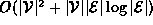
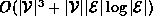
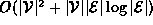
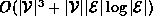
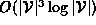
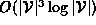

Data Structures and Algorithms
with Object-Oriented Design Patterns in C++
Data Structures and Algorithms
with Object-Oriented Design Patterns in C++
In this section we consider the all-pairs, shortest path problem:
Given an edge-weighted graph  ,
for each pair of vertices in
,
for each pair of vertices in  find the length of the shortest weighted path between the two vertices.
find the length of the shortest weighted path between the two vertices.
One way to solve this problem is to run Dijkstra's algorithm  times
in turn using each vertex in
times
in turn using each vertex in  as the initial vertex.
Therefore, we can solve the all-pairs problem in

time when adjacency lists are used, and
,
when adjacency matrices are used.
However, for a dense graph (
as the initial vertex.
Therefore, we can solve the all-pairs problem in

time when adjacency lists are used, and
,
when adjacency matrices are used.
However, for a dense graph (  ) the running time
of Dijkstra's algorithm is ,
regardless of the representation scheme used.
) the running time
of Dijkstra's algorithm is ,
regardless of the representation scheme used.
 Copyright © 1997 by Bruno R. Preiss, P.Eng. All rights reserved.
Copyright © 1997 by Bruno R. Preiss, P.Eng. All rights reserved.